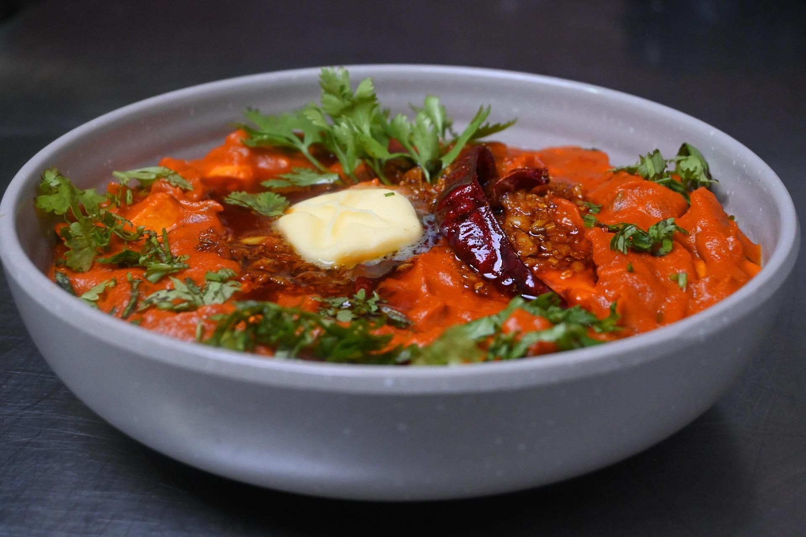

Hello! Welcome to my recipe (well, technically not mine) of paneer tikka masala.
This paneer tikka masala made with cubes of paneer cheese in a spicy creamy curry sauce is easy to make. This vegetarian dish goes well with naan or basmati rice.

Gather all ingredients.
Melt butter in a skillet over medium heat. Add paneer cubes; cook and stir until golden, about 5 minutes.
Add onion, bell pepper, jalapeños, ground cashews, garlic paste, ginger paste, cayenne pepper, cumin, coriander, and garam masala; cook and stir until well combined and fragrant, about 1 minute.
Mix tomato sauce, half-and-half, and salt into paneer mixture; simmer until thickened, about 30 minutes.